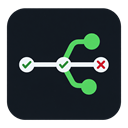
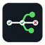

E2E TESTER / VISUAL IDENTITY
From request to verified result.
One timeline. Branching test paths. A compact identity for the workspace that helps teams test APIs end to end.
Light wordmark
Guided API testing
Dark wordmark
Guided API testing
Application icon

128 px
64 px48 px32 px16 px
Working palette
Typography & voice
E2E Tester · Guided API testing
Segoe UI for the product. Consolas for evidence.
GET /whoami
PASS · Expected 401 · Received 401
Clear actions. Specific results. The branching timeline identifies the app; actual test outcomes always keep their own labels.